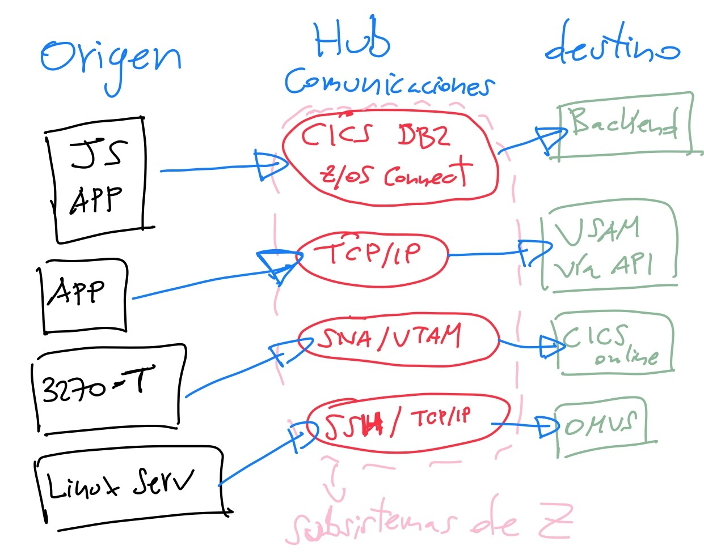

El Sistema Z es una plataforma preparada para entornos híbridos donde establecer comunicaciones con aplicaciones tradicionales
y con sistemas modernos basados en red, e integrarse
Cuenta con dos grandes arquitecturas de red:
1. La Arquitectura SNA: es la arquitectura de red tradicional, interna y propietaria de IBM.
Diseñada en los años 70. Su uso se ha dado para comunicaciones internas entre terminales, aplicaciones y sistemas.
Sus características relevantes son:
1. Alta fiabilidad y control.
2. Uso estructurado y jerárquico.
3. Ideal para entornos cerrados como banca.
4. Es un protocolo base para redes VTAM (redes con método de acceso de telecomunicaciones virtuales).
2. La Arquitectura TCP/IP: es el protocolo estándar de Internet y redes modernas, soportado por IBM de forma
nativa en z/OS para integrarse con otros servidores, aplicaciones y sistemas. Sus características relevantes son:
1. Establecer comunicaciones entre el mainframe y los sistemas distribuidos.
2. Permitir el acceso desde navegadores, APIs o herramientas DevOps.
3. Es compatible con servicios como FTP, HTTP(S), SSH, DNS o correo electrónico.
4. Permite exponer aplicaciones tradicionales vía Web Services o APIs RESTful
Su objetivo final es que la Arquitectura SNA se integre sobre la de TCP/IP, encapsulando así el tráfico de uno dentro de paquetes del otro,
con el objetivo de permitir la interoperabilidad y la migración desde SNA a TCP/IP en muchos sectores del mercado. Aun así, SNA se sigue
usando en aplicaciones críticas de banca, seguros o gobierno.
Actúa como un Hub de Comunicaciones:

Su seguridad de red y comunicaciones consiste en:
1. Dar soporte TLS/SSL nativo en TCP/IP.
2. Cifrar la red vía IPsec, por medio de los coprocesadores criptográficos.
3. Integrarse con RACF para autenticación de red.
----------------------------------------------------------------------------------------------------------------------------
NOTAS IMPORTANTES:
SNA es la arquitectura de red clásica de IBM, muy fiable, usada internamente con VTAM y terminales 3270.
TCP/IP permite que IBM Z se conecte al mundo moderno (APIs, servicios web, entornos distribuidos).
IBM Z actúa como sistema central que comunica y procesa datos entre aplicaciones antiguas y modernas.
Se puede securizar todo el tráfico con cifrado y control de accesos (TLS/IPSec + RACF).
IBM Z está preparado para infraestructuras híbridas y cloud, por lo que, no es un sistema aislado.